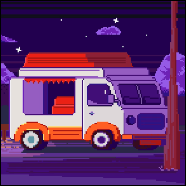

-
Фритрек и нулевой спринт: Подготовка к работе
</HTML>
Это было самое начало пути. На этом этапе важно было проникнуться основами и настроиться на учёбу. И, возможно, подумать, как новые знания могут повлиять на ваше будущее.
Трудно вспомнить с чего все началось. Моей мечтой было заниматься интересными и творческими задачами, и не быть привязанным к определенному месту.
-
1 спринт: Я — чистый лист

</CSS>
На первых этапах мы работали со страхами и сомнениями, которые часто испытывают новички. Один из них — страх перед чистым листом. Это, конечно же, намного сложнее, чем боязнь куска бумаги. Часто за этим ощущением скрываются более глубокие вопросы: с чего начать? а вдруг будет слишком сложно? что, если я не справлюсь?
И до сих пор эти вопросы у меня появляются с каждым проектом. Но я нашел способ не сдавать, нужно всего лишь оставить себе послание в будущее, в котором хвалю себя за проделанную работу и за найденные решения, о которых и не мог подумать в начале пути.
-
1 спринт: А если не получится?

<JS>
Первый проект — позади! Но это всё ещё самое начало пути. Радость могла быстро померкнуть и смениться ожиданием провала. Или вы, наоборот, могли вдохновиться успехами и поверить в себя.
Первое задание не показалось сложным на первый взгляд, но разглядывая детали вся сложность и открылась. Ощущения от сдачи ПР были очень приятные, особенно если бы сдал не с последнего раза!
-
2 спринт: Погоня за идеалом

</HTML>
На этом этапе вы уже достаточно разбирались в основах вёрстки, чтобы понять, как много ещё впереди. Вы могли попытаться погнаться за идеалом и понять, что он недостижим. А, может, вы вовсе и не подвержены перфекционизму и вместо того, чтобы сделать идеально, старались просто сделать.
И пришло понимание, что чем больше знаешь, тем меньше знаешь. Учится никогда не поздно и идеал недостижим. Или просто он не стоит затраченного времени?
-
2 спринт: О тех, кто рядом

Спешка
Всё это время вы были не одиноки (хотя, возможно, иногда и чувствовали, что одни против целого мира). Вас окружали одногруппники, команда сопровождения и просто близкие люди, которым можно пожаловаться, если очередной макет просто так не поддавался. Осваивать что-то новое легче, когда рядом есть единомышленники, не правда ли?
Ценно, что когда опускаюстя руки есть люди, которые готовы поддержать и помочь поднять руки.
-
3 спринт: Обходные стратегии

Страх
На этом курсе вы постоянно решали разные задачи. В какой-то момент вам могло показаться, что решения просто иссякли. Значит, пришло время посмотреть на задачу под другим углом.
При начале нового проекта всегда отсутствовало понимание как его делать, и только разбираясь, маленькими шажками, что-то да получалось! Из раза в раз были одни и те же мысли - "Если у меня это получится, то я буду вообще супер молодец"
-
3 спринт: Когда опускаются руки

Радость
Во время учёбы часто возникает чувство, когда не знаешь, за что хвататься. Вроде и проектную пора сдавать, и задачи хочется порешать, и в теории получше разобраться, и жизнь не забыть пожить. В такие моменты очень нужна концентрация. Вспомните, откуда вы её черпали.
Музыка из Гарри Поттера ван лав. Кажется с ней можно вообще ни на что обращать внимание! (Кроме конечно душевных эмоций)
-
«Сейчас я здесь»

Увлечение
Сейчас вы уже очень много знаете о вёрстке. Но это только начало. Во-первых, впереди ещё много материала про «красотищу». Во-вторых, с окончанием курса учёба не заканчивается. Вёрстка — это целый мир. И этот мир постоянно меняется. Познать его полностью не получится, но это тот случай, когда важен сам процесс познания. Ведь часто путь — и есть результат.
Сейчас мною овладевают переживания. Столько всего сделано и выучено, но этого мало! Сколько же нужно узнать еще? А если обьем информаци будет слишком большой, а понимание происходящего просто пропадет? Конечно об этом нельзя узнать, если не попробовать!